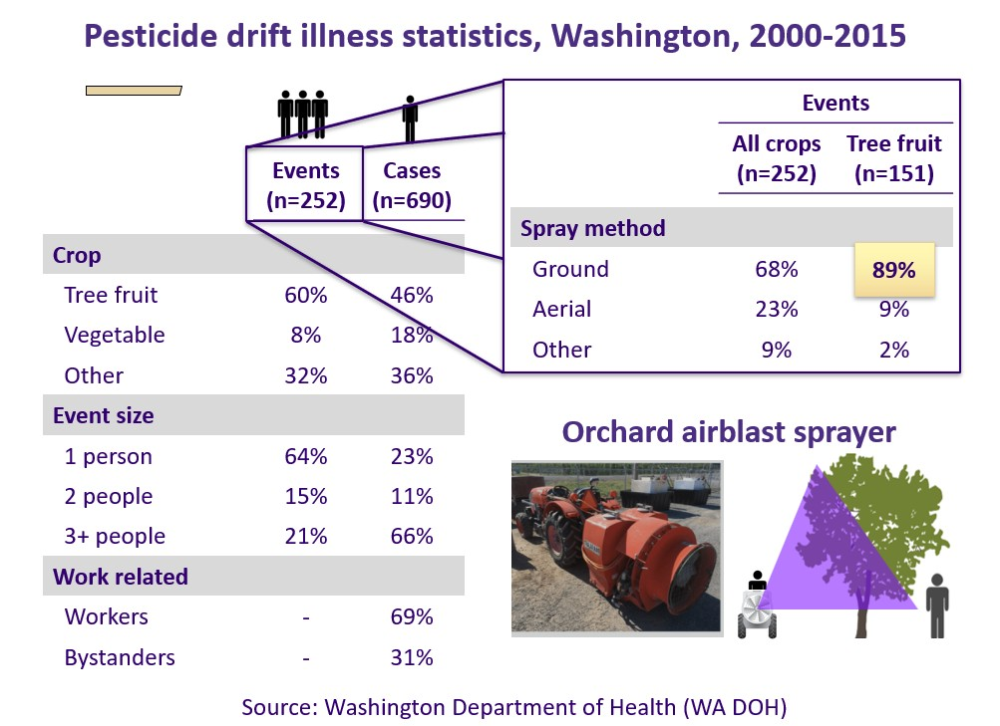
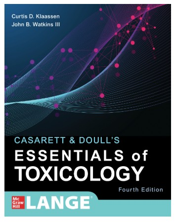
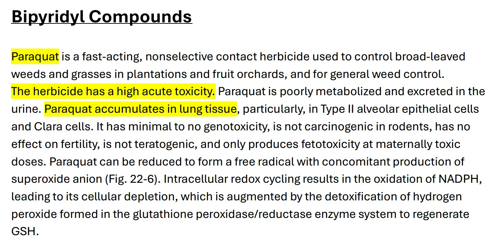
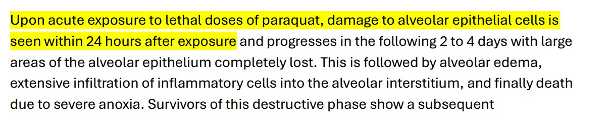
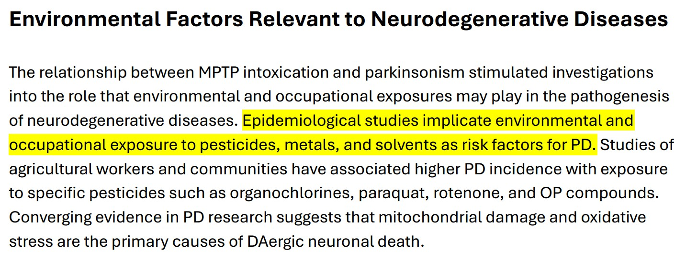
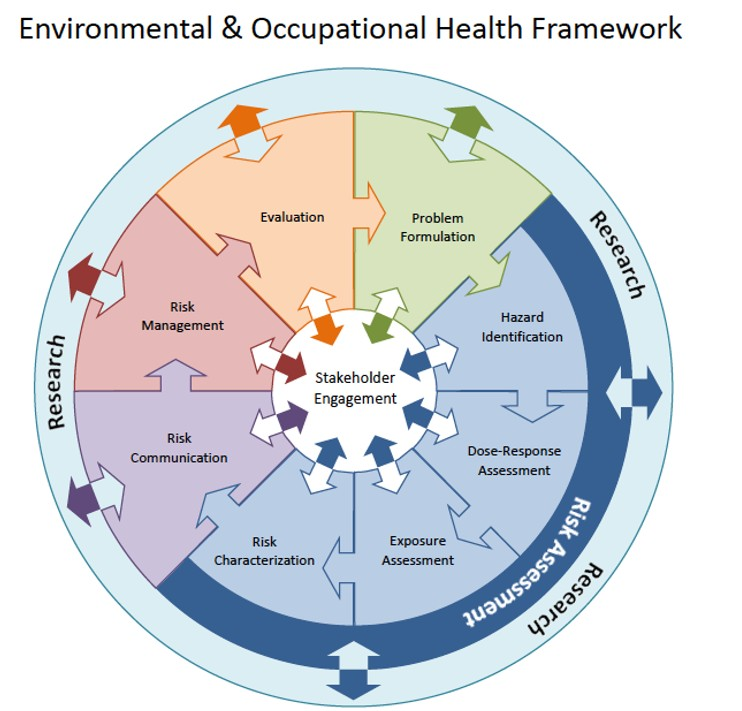
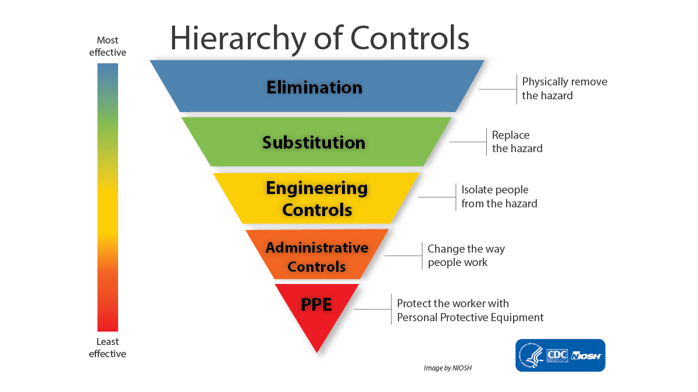
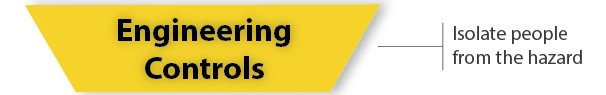

SHM 102: Occupational Health
Occupational Safety and Health Management
Yoni Rodriguez
Engineering Technologies, Safety, and Construction
Central Washington University
Introduction
- Who am I?
- What is occupational health?
- Where does occupational health fit?
- What will we do in this course?
Who am I?
Before CWU
Occupational Health Scientist
NASA
Education
B.S. Biochemistry
Washington State University
Graduate Training
University of Washington
Today
Assistant Professor
Central Washington University
Research Scientist
University of Washington
What is Occupational Health?
What is Occupational Health?
A working definition
“Occupational and environmental health is the study and prevention of health problems caused or influenced by the environments where people work, live, and interact.” - Centers for Disease Control and Prevention (CDC)
Where does Occupational Health occur?
- Do you get exposed on your way to work?
- Does the community nearby get exposed?
- Do you take the exposures home?
Why is Occupational Health important?
- Does this impact my health?
- Does this impact the health of my family?
- Does this impact the health of my community?
Current News
The New York Times, August 13, 2026.
Read the article →
Where is paraquat used?
Source: U.S. Geological Survey.
Explore paraquat use map →
Who is exposed?

Where was the applicator exposed?


Is the applicator the only person exposed?
Pesticide drift in Washington State

Source: Kasner et al. (2021), Environmental Health.
View study on PubMed →
What happens when exposure occurs?
Paraquat: acute toxicity


Source: Costa (2021), “Toxic Effects of Pesticides,” in Casarett & Doull’s Essentials of Toxicology.
View textbook chapter →
What can severe acute exposure do?

Source: Costa (2021), “Toxic Effects of Pesticides,” in Casarett & Doull’s Essentials of Toxicology.
View textbook chapter →
What about long-term health?

Source: Moser et al. (2021), “Toxic Responses of the Nervous System,” in Casarett & Doull’s Essentials of Toxicology.
View textbook chapter →
What did we just do?
We identified a hazard
Paraquat
↓
We asked where it is used
Agricultural workplaces and environments
↓
We identified who can be exposed
Applicators → Coworkers → Bystanders → Communities
↓
We examined how people are exposed
Dermal contact → Inhalation → Ingestion
↓
We considered what happens after exposure
Toxicity → Health effects → Health risks
This is Occupational Health
Occupational health is an applied science.
We use principles from chemistry, biology, physics, toxicology, epidemiology, and other disciplines
to identify health hazards in the real world.
We determine who is exposed, how exposure occurs, and how much exposure occurs.
We use that information to understand risk and develop strategies to
prevent or reduce exposure and protect health.
How to Apply Occupational Health

Source: University of Washington Department of Environmental & Occupational Health Sciences.
Explore the ENV H 501 course framework →
How do we control exposure?
If a hazard can affect health…
What can we do about it?
Hierarchy of Controls

Source: National Institute for Occupational Safety and Health (NIOSH).
Explore the Hierarchy of Controls →
Apply it to our case
How could we reduce pesticide exposure?
Where would you intervene?
What could prevention look like?
Can we measure environmental conditions…
…and use that information before exposure occurs?
Measuring the environment
Source: Washington State University AgWeatherNet.
Explore AgWeatherNet →
From measurement to prediction
Source: Rodriguez, Y. — Exploring Wind Ramping as a Determinant of Pesticide Drift, University of Washington DEOHS.
View research project →
Where does this fit in the Hierarchy of Controls?
Administrative Control
Forecast → Alert → Delay or reschedule application

Engineering Control
Forecast → Equipment responds → Modify or stop application
Source: National Institute for Occupational Safety and Health (NIOSH).
Explore the Hierarchy of Controls →
What will we explore?
Five broad categories of occupational hazards
- Chemical
- Physical
- Biological
- Ergonomic
- Psychosocial
What will we learn in this course
Identify Hazards
↓
Measure Hazards
↓
Assess Hazards
↓
Control Hazards
Understand exposure. Prevent harm.
Day 1: Key Terms
These are the terms I expect you to know from today’s lecture.
| Term | What should you know? |
|---|---|
| Occupational health | Understanding and preventing health problems related to work and work environments |
| Hazard | Something with the potential to cause harm to human health |
| Exposure | Contact between a person and a hazard |
| Exposure route | How a hazard enters or contacts the body: inhalation, ingestion, or dermal contact |
| Acute health effect | A health effect occurring relatively soon after exposure |
| Chronic health effect | A health effect developing or persisting over a longer period |
| Hierarchy of Controls | A framework for selecting ways to prevent or reduce exposure (know the hierarchy) |
| Administrative control | Changing how or when people work |
| Engineering control | Isolating people from a hazard |
Make your flashcards
Copy → Paste → Study
Copy the terms below to make your own Anki or Quizlet flashcards.
Anki: Save as a .txt file → Import → Select Semicolon as the field separator.
Occupational health;Understanding and preventing health problems related to work and work environments Hazard;Something with the potential to cause harm to human health Exposure;Contact between a person and a hazard Exposure route;How a hazard enters or contacts the body: inhalation, ingestion, or dermal contact Acute health effect;A health effect occurring relatively soon after exposure Chronic health effect;A health effect developing or persisting over a longer period Hierarchy of Controls;A framework for selecting ways to prevent or reduce exposure. Know the order: elimination → substitution → engineering controls → administrative controls → PPE Administrative control;Changing how or when people work Engineering control;Isolating people from a hazard